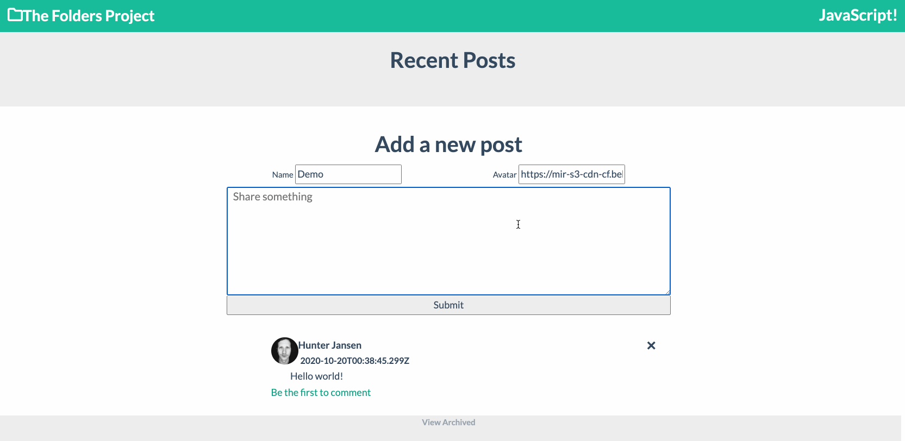
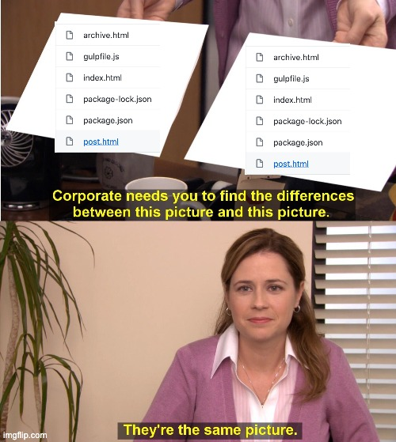

Past Blast:
Building a frontend without a framework in 2015
Libraries are overrated
You may not need one
A developer's time capsule
Why? Just. . . Why?
👋 I'm Hunter
- Software Dev @ League
- Experience writing large scale apps in:
- Angular + AngularJS
- React
- Vue
- + Others
- OSS contributor and maintainer
- Easily bored
The game plan
- The Folders Project
- FoldersJS
-
👶 Hunter's legacy code
- API Interaction
- Routing
- Styling
- "Models"
- Templating
- Building
The Set Up: 52 Folders
The Folders Project
- Create the same app with different tech
- Share an api
- Share css
- Share common functionality
K, but y tho
K, but y tho
- An easier way to play with new frameworks
- A low effort gateway to experimentation
- Allows me hands on time with all the things
- Reduces my FOMO
- It's a pandemic
FoldersJS
Oldtimey JS
- Project started in 2015 (that's 5 years ago)
- No frameworks
- No jquery
- No libraries *
- Just JS
Just to repeat. 2015
That's the year that ES2015 happened
ES6
- Let/Const
- Template Strings
- String Search (.includes, startsWith, endsWith)
- Arrow functions
- Default args
- Rest parameters
- Spread operator
- Destructuring
- For/Of loops
- Sets
- Maps
- CLASSES
- Object Literals
- Generator
- Modules
- Symbols
- Promises
API interactions

No Fetch! 🚫🐶
Fetch was introduced in 2015
Plenty of libraries to make api requests easier (axios)
Frameworks at the time included http tools
Devs had to build their own API layer
XMLHttpRequest
fetch: function (path, callback) {
var uri = BASE_URI + "/" + path;
var request = new XMLHttpRequest();
request.open("GET", uri, true);
request.onload = function () {
if (request.status >= 200 && request.status < 400) {
callback(JSON.parse(request.response));
}
};
request.onerror = function () {
reject(new Error("Something Went wrong on the API"));
};
request.send();
}
API.post
post: function (path, data, callback) {
var uri = BASE_URI + "/" + path;
var request = new XMLHttpRequest();
request.open("POST", uri, true);
request.setRequestHeader("Content-Type", "application/json; charset=UTF-8");
// ...onload and onerror handlers
request.send(data);
},
}
Leveraging the API layer
API.post('resources', {name: 'Folder'}, function (response){
console.log(response);
});
Routing
Not much has changed
- A separate .html file for each route
- Browsers have to fetch assets on every route change
- This approach obsolete thanks to frameworks
What that means
- All the JS that’s used on that page
- All the styling that’s used on that page
- Everything that should exist in the <Head> tag (including the above, and things like a title)
- And a body tag for all of the content to actually go into
A bit of a pain in the behind
Styling

Being Sassy
- Uncommon to write "plain css"
- Sass or SCSS?!
- Both are ways to reduce duplication both of your style definitions, as well as your selectors
In practice
Without SCSS
.post-title {
font-size: 150%;
font-weight: 700;
margin: 0;
}
.post-title img {
width: 50px;
height: 50px;
border-radius: 50%;
}
With SCSS
.post-title {
font-size: 150%;
font-weight: 700;
margin: 0;
img {
width: 50px;
height: 50px;
border-radius: 50%;
}
}
Models
Why models
- We want to abstract data operations away from the UI
- Prevent code duplication
- Create a common API for interacting with data types
- Kinda sounds like various parts of redux
The Post Model
function Post() {
this.posts = [];
}
Post.prototype.setPosts = function (data) {
this.posts = data;
};
Post.prototype.getPosts = function () {
return this.posts;
};
Post.prototype.findAll = function (callback) {
var context = this;
API.fetch("posts", function (data) {
context.setPosts(data, callback(data));
});
};
Using the model
const post = Post()
post.findAll(function (posts){
console.log(posts)
});
Templating
- Render an item in a predefined way
- Templates have very little logic
- Builds your ui from building blocks based on data
- Handlebars, moustache . . . react?!?!
This is not a post, this is a tribute
function commentTemplate(comment, index) {
var template;
template =
"<article class ='post comment" + (index % 2 === 0 ? " odd" : "") + "'>";
template += "<div class='post-title'>";
template += "<img src='" + comment.avatar + "'/>";
template += "<div>";
template += "<p><strong>" + comment.name + "</strong></p>";
template += "<p class='post-meta'>" + comment.createdAt + "</p></div></div>";
template += "<p class='post-content'>" + comment.content + "</p>";
template += "</article>";
return template;
}
Using a template
//Find the desired location on screen and fill it with the markdown
var target = document.querySelector(".comments-container");
target.innerHTML = elements.join("");
Build Systems
Why a build system?
- Can keep code in separate files
- Allows for minification
- Allows SCSS
Gulp
gulp.task("concat", function () {
return gulp
.src([
"src/constants.js",
"src/api.js",
"src/post.js",
"src/user.js",
"src/*.js",
])
.pipe(concat("bundle.js"))
.pipe(gulp.dest("./dist/"));
});
Does this break the rules of the experiment?
Recap
- API interactions
- Routing
- Styling
- Models
- Templating
- Build Systems
SO MUCH PROGRESS

Just imagine
Just imagine